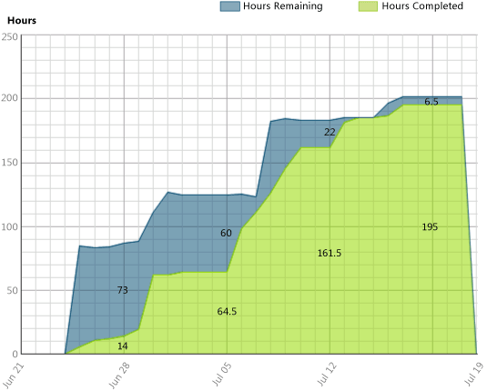
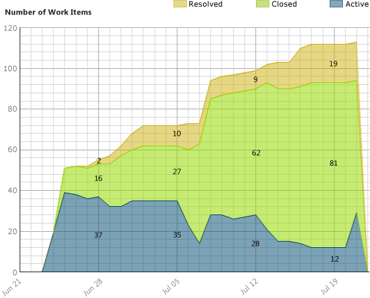
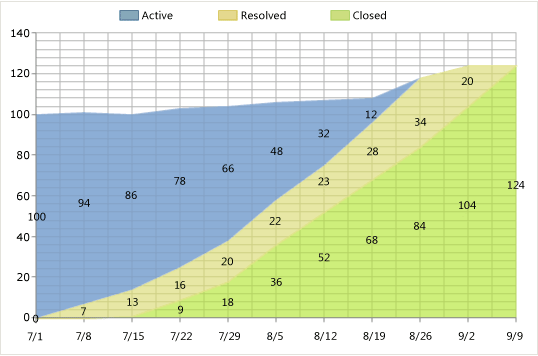
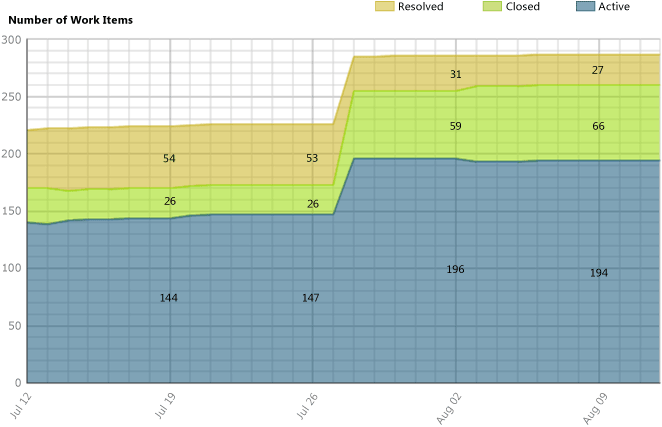
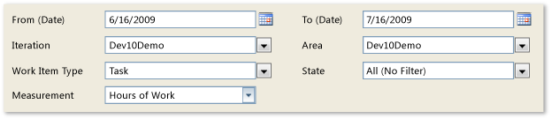

After the team has estimated its tasks and begun work, you can use the Remaining Work report to track the team's progress and identify any problems in the flow of work.
For information about how to access, refresh, or manage reports, see Reports (GovDev).
|
|
|---|
|
This report requires that the team project collection that contains your team project
was provisioned with SQL Server Reporting Services. This report is not available
if
|
|
In this topic |
You can use this report to answer the following questions :
|
Required Permissions
To view the report, you must be assigned or belong to a group that has been assigned the Browser role in Reporting Services. For more information, see Add Users to Team Projects or Managing Permissions.
 Data
in the Report
Data
in the Report
The Remaining Work report summarizes the data that was captured during the specified time interval for each task, Use Case, or bug based on the filter criteria that were specified for the report. The data is derived from the data warehouse.
You can view this report in either the Hours of Work view or the Number of Work Items view. The first view displays the total number of hours of work for the specified time period and the team's progress toward completing that work. The second view displays the number of work items for the specified time period and the number of work items in each state. Each view provides an area graph that charts the progress of completed work against the total estimated work for the specified time duration.
You can filter the report in the following ways:
-
Change the start and end dates for the report.
-
Filter the tasks, use cases, and bugs that are counted in the report by specifying iteration and area paths, types of work items, and states.
For more information, see Filtering the Report and Changing the Displaylater in this topic.
Hours of Work
The following illustration shows an example of the Remaining Work report in the Hours of Work view. This example is healthy in that a steady rate of work is being completed. However, the team significantly underestimated the amount of work that was required to complete the iteration, as shown by the hours remaining at the start and the hours completed at the end.
Number of Work Items
The following illustration shows the same report as in the previous illustration but in the Number of Work Items view, with the work items grouped by state. Although the team made good progress resolving and closing work items, the estimate of work items increased from the start of the iteration to almost three times more by the end of the iteration.
The following table summarizes the data that the report shows, subject to which filters and display option you specify.
|
Hours |
Number of Work Items |
|---|---|
|
|
Required Activities for Tracking Work Items
For the Remaining Work report to be useful and accurate, the team must perform the following activities to track work items:
-
Define tasks, use cases, and bugs, and specify the Iteration and Area paths for each work item.
 Note
Note
For information about how to define iteration and area paths, see Create and Modify Areas and Iterations.
-
Specify and update the Hours Completed and Hours Remaining fields for each task or subtask as the team makes progress on each work item.
 Important
Important
If you subdivide a task into subtasks, specify hours only for the subtasks. These hours are rolled up as summary values for the parent task and Use Case. For more information, see Address Inaccuracies Published for Summary Values.
-
Update the State of each use case, task, and bug as it progresses from active to closed.
Setting
the Duration of the Iteration
To understand the progress made for your current iteration, the start and end dates for the report must match those of your current iteration cycle.
To change the duration of the iteration
-
Next to Iteration Start (Date) or Iteration End (Date), click the calendar icon, and then click a date.
-
Click View Report.
Interpreting
the Report
The Remaining Work report displays information that you can use to understand how well the team is progressing and whether the team will finish the tasks within the allocated time.
Questions That the Report Answers
You can review the report to determine the progress within an iteration or over time. Specifically, you can find answers to these questions:
-
How fast is the team burning down remaining work?
-
Is work being added during the iteration? Is the team expanding the scope of the work?
-
How much progress can the team make in the available time?
-
Approximately when can the team finish the work?
-
Is too much work in progress?
-
Is the flow of work being impeded or blocked?
-
When will the team finish the current iteration?
Healthy Version of Report
A healthy Remaining Work report shows steady progress in resolving and closing tasks, as the following illustration shows. The rectangular shape of the diagram indicates that the estimated work closely matched the required work.
Unhealthy Version of Report
The following illustration shows an unhealthy version of the Remaining Work report. Little progress is made for several weeks at a time, as indicated by the flat line of work items remaining in an unchanged state. Also, the number of work items increases past the midpoint of the iteration, which indicates that more features have been introduced.
An unhealthy Remaining Work report might show one or more of the following indicators:
-
Number of hours completed or number of work items resolved or closed remains flat.
This situation indicates that one or more issues might be blocking progress or that the team has not resolved and closed work items that it has completed, fixed, and verified.
-
Number of remaining hours or active work items increases.
This situation indicates that either the team did not accurately estimate the work at the start of the iteration or that the team added features after the iteration started. When required effort is larger than estimated effort, team members might be underestimating the difficulty, time, or other factors. This area is worth inquiring about to determine root causes. For example, you might want to determine how granular the tasks are.
Filtering
the Report and Changing the Display
You can filter the Remaining Work report or change its display in the following ways:
-
Change the start and end dates for the report.
-
Filter the Use Cases, bugs, and tasks that appear in the report by specifying iteration and area paths, types of work items, and work item states.
-
Switch the view in which the report appears.
The following illustration shows the available filters and display options:
To filter the tasks, use cases, and bugs that appear in the report
-
Perform one or more of the following actions:
-
In the Iteration or Area list, select the check box of each iteration or product area to include.
-
In the Work Item Type or State list, select the check box of each work item type or state to include.
-
-
Click View Report.
To switch between displaying the number of work hours and number of work items
-
In the Measurement list, click Hours of Work or Number of Work Items.
-
The Hours of Work view displays the cumulative value of work hours for all tasks based on the filters that you applied to the report.
-
The Number of Work Items view displays the cumulative states of all work items based on the filters that you applied to the report.
-
-
Click View Report.